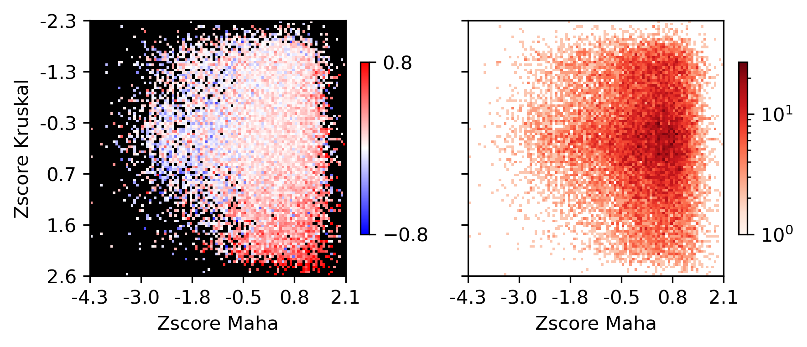
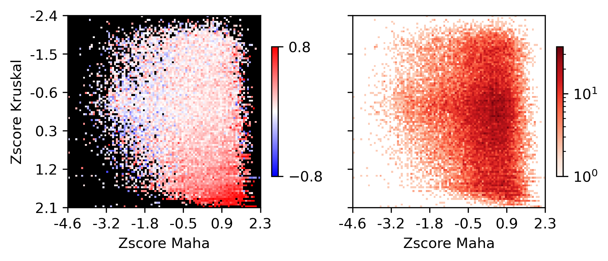

Plot correlation between compartment and mC/ATAC/RNA#
import os
import cooler
import numpy as np
import pandas as pd
import matplotlib as mpl
import matplotlib.pyplot as plt
from matplotlib.colors import LogNorm
from matplotlib import cm as cm
import seaborn as sns
from scipy.stats import zscore, pearsonr, norm
mpl.style.use('default')
mpl.rcParams['pdf.fonttype'] = 42
mpl.rcParams['ps.fonttype'] = 42
mpl.rcParams['font.family'] = 'sans-serif'
mpl.rcParams['font.sans-serif'] = 'Helvetica'
leg = ['L23_IT', 'L4_IT', 'L5_IT', 'L6_IT', 'L6_IT_Car3', 'L56_NP', 'L6_CT', 'L6b', 'L5_ET', 'Amy',
'Lamp5', 'Lamp5_LHX6', 'Sncg', 'Vip', 'Pvalb', 'Pvalb_ChC', 'Sst', 'CHD7',
'MSN_D1', 'MSN_D2', 'Foxp2', 'SubCtx',
'ASC', 'ODC', 'OPC', 'MGC', 'PC', 'EC', 'VLMC'
]
legname = ['L2/3-IT', 'L4-IT', 'L5-IT', 'L6-IT', 'L6-IT-Car3', 'L5/6-NP', 'L6-CT', 'L6b', 'L5-ET', 'Amy-Exc',
'Lamp5', 'Lamp5-Lhx6', 'Sncg', 'Vip', 'Pvalb', 'Pvalb-ChC', 'Sst', 'Chd7',
'MSN-D1', 'MSN-D2', 'Foxp2', 'SubCtx-Cplx',
'ASC', 'ODC', 'OPC', 'MGC', 'PC', 'EC', 'VLMC'
]
leg2name = {xx:yy for xx,yy in zip(leg, legname)}
leg = {'exc': ['L23_IT', 'L4_IT', 'L5_IT', 'L6_IT', 'L6_IT_Car3', 'L56_NP', 'L6_CT', 'L6b', 'Amy'],
'inh': ['Lamp5', 'Lamp5_LHX6', 'Sncg', 'Vip', 'Pvalb', 'Pvalb_ChC', 'Sst', 'CHD7'],
'msn': ['MSN_D1', 'MSN_D2', 'Foxp2'],
'sub': ['SubCtx'],
'glia': ['ASC', 'ODC', 'OPC'],
'mgc': ['MGC'],
'smc': ['PC'],
'endo': ['EC'],
'fibro': ['VLMC'],
}
leg['neu'] = leg['exc'] + leg['inh'] + leg['msn'] + leg['sub']
leg['all'] = leg['neu'] + leg['glia'] + leg['mgc'] + leg['smc'] + leg['endo'] + leg['fibro']
group_name = 'neu'
leg = pd.Index(leg[group_name])
legname = leg.map(leg2name)
res = 100000
indir = f'/home/jzhou_salk_edu/sky_workdir/hba/compartment_majortype/diff/{group_name}/'
comp = pd.read_csv(f'{indir}DifferentialResult/fdr_result/differential.intra_sample_combined.pcQnm.bedGraph', sep='\t', header=0, index_col=None)
comp.index = comp['chr'] + '_' + (comp['start'] // res).astype(str)
comp
| chr | start | end | L23_IT_100Kb | L4_IT_100Kb | L5_IT_100Kb | L6_IT_100Kb | L6_IT_Car3_100Kb | L56_NP_100Kb | L6_CT_100Kb | ... | Sst | CHD7 | MSN_D1 | MSN_D2 | Foxp2 | SubCtx | sample_maha | pval | padj | dist_clust | |
|---|---|---|---|---|---|---|---|---|---|---|---|---|---|---|---|---|---|---|---|---|---|
| chr10_2 | chr10 | 200000 | 300000 | 1.20141 | 1.40148 | 1.12274 | 0.91856 | 0.71971 | 1.45364 | 1.35924 | ... | 1.60003 | 1.79399 | 1.18581 | 1.14140 | 1.64998 | 1.77294 | 78.797991 | 6.274326e-09 | 1.654675e-08 | 1 |
| chr10_3 | chr10 | 300000 | 400000 | 1.67618 | 1.43001 | 1.33450 | 1.32691 | 0.51945 | 1.22911 | 1.53759 | ... | 1.69831 | 1.69831 | 1.61143 | 1.15231 | 1.94190 | 2.06830 | 101.685104 | 6.282661e-13 | 1.940153e-12 | 1 |
| chr10_4 | chr10 | 400000 | 500000 | 1.27442 | 1.33094 | 1.21215 | 1.43974 | 0.96214 | 1.59233 | 1.40148 | ... | 1.58100 | 1.61143 | 1.64171 | 1.62984 | 1.69065 | 1.68152 | 28.864611 | 9.045962e-02 | 1.563036e-01 | 1 |
| chr10_5 | chr10 | 500000 | 600000 | 1.43001 | 1.39806 | 1.69428 | 1.60003 | 0.57439 | 1.61143 | 1.37993 | ... | 1.76052 | 1.79952 | 1.58100 | 1.83248 | 1.55484 | 2.17604 | 110.773702 | 1.418987e-14 | 4.640257e-14 | 1 |
| chr10_6 | chr10 | 600000 | 700000 | 1.43350 | 1.69065 | 1.44978 | 1.66232 | 1.23573 | 1.26750 | 1.73916 | ... | 1.90078 | 1.82624 | 1.85399 | 1.42406 | 1.60286 | 1.35578 | 8.253318 | 9.900547e-01 | 1.000000e+00 | 1 |
| ... | ... | ... | ... | ... | ... | ... | ... | ... | ... | ... | ... | ... | ... | ... | ... | ... | ... | ... | ... | ... | ... |
| chr9_1367 | chr9 | 136700000 | 136800000 | 2.53781 | 2.49765 | 2.43707 | 2.53781 | 2.64364 | 2.50284 | 2.61332 | ... | 2.49765 | 2.30178 | 2.55214 | 2.61332 | 2.42730 | 2.37386 | 0.208439 | 1.000000e+00 | 1.000000e+00 | 1 |
| chr9_1368 | chr9 | 136800000 | 136900000 | 2.25818 | 2.34290 | 2.30178 | 2.27476 | 2.20722 | 2.28698 | 2.49765 | ... | 2.35196 | 2.29048 | 2.25515 | 2.25515 | 2.17299 | 2.22961 | 1.756256 | 1.000000e+00 | 1.000000e+00 | 1 |
| chr9_1369 | chr9 | 136900000 | 137000000 | 2.26494 | 2.13128 | 2.34837 | 2.37084 | 2.33576 | 2.35196 | 2.46547 | ... | 2.39138 | 2.22605 | 2.35521 | 2.31751 | 2.40634 | 2.33914 | 0.318975 | 1.000000e+00 | 1.000000e+00 | 1 |
| chr9_1370 | chr9 | 137000000 | 137100000 | 2.35196 | 2.04449 | 2.36778 | 2.18888 | 2.30471 | 2.28174 | 2.42333 | ... | 2.35761 | 2.25818 | 2.30178 | 2.18888 | 2.30759 | 2.36778 | 0.952000 | 1.000000e+00 | 1.000000e+00 | 1 |
| chr9_1372 | chr9 | 137200000 | 137300000 | 2.33276 | 2.13811 | 2.29494 | 2.32970 | 2.46547 | 2.41199 | 2.52050 | ... | 2.46547 | 2.46252 | 2.38687 | 2.35196 | 2.32339 | 2.21984 | 0.170553 | 1.000000e+00 | 1.000000e+00 | 1 |
24745 rows × 49 columns
binall = comp[['chr', 'start', 'end', 'sample_maha', 'pval', 'padj']]
comp = comp[leg]
mcg = pd.read_hdf(f'{outdir}comp_mCG.hdf', key='data')
mch = pd.read_hdf(f'{outdir}comp_mCH.hdf', key='data')
atac = pd.read_hdf(f'{outdir}comp_ATAC.hdf', key='data')
legatac = atac.columns
binall = pd.read_hdf(f'{outdir}bin_stats.hdf', key='data')
# selb = (binall['padj']<1e-3)
selb = zscore(binall['sample_maha'])>norm.isf(0.025)
print(selb.sum())
1024
tmpcg = mcg.loc[selb].values
tmpcg = zscore(tmpcg, axis=1)
tmpch = mch.loc[selb].values
tmpch = zscore(tmpch, axis=1)
tmpatac = atac.loc[selb].values
tmpatac = zscore(tmpatac, axis=1)
tmp3c = comp.loc[selb].values
tmp3c = zscore(tmp3c, axis=1)
cg = sns.clustermap(tmp3c, cmap='bwr', vmin=-3, vmax=3, metric='cosine', xticklabels=leg, yticklabels=[], figsize=(6,6))
findfont: Font family ['sans-serif'] not found. Falling back to DejaVu Sans.
findfont: Generic family 'sans-serif' not found because none of the following families were found: Helvetica

rorder = cg.dendrogram_row.reordered_ind.copy()
corder = cg.dendrogram_col.reordered_ind.copy()
idxatac = np.arange(len(leg))[leg.isin(legatac)]
corderatac = [xx for xx in corder if xx in idxatac]
fig, axes = plt.subplots(1, 4, sharey='all', figsize=(12,5), dpi=300)
ax = axes[0]
ax.imshow(tmp3c[np.ix_(rorder, corder)], cmap='bwr', aspect='auto', vmin=-3, vmax=3, interpolation='none')
ax.set_title('Compartment Score', fontsize=10)
# sns.despine(ax=ax, left=True, bottom=True)
ax.set_xticks(np.arange(len(leg)))
ax.set_xticklabels(legname[corder], rotation=90)
ax.set_yticks([])
ax.set_ylabel(f'{tmp3c.shape[0]} Diff Comp')
ax = axes[1]
ax.imshow(tmpatac[np.ix_(rorder, corderatac)], cmap='bwr', aspect='auto', vmin=-3, vmax=3, interpolation='none')
ax.set_title('ATAC', fontsize=10)
# sns.despine(ax=ax, left=True, bottom=True)
ax.set_xticks(np.arange(len(legatac)))
ax.set_xticklabels(legname[corderatac], rotation=90)
ax = axes[2]
ax.imshow(tmpcg[np.ix_(rorder, corder)], cmap='bwr', aspect='auto', vmin=-3, vmax=3, interpolation='none')
ax.set_title('mCG', fontsize=10)
# sns.despine(ax=ax, left=True, bottom=True)
ax.set_xticks(np.arange(len(leg)))
ax.set_xticklabels(legname[corder], rotation=90)
ax = axes[3]
ax.imshow(tmpch[np.ix_(rorder, corder)], cmap='bwr', aspect='auto', vmin=-3, vmax=3, interpolation='none')
ax.set_title('mCH', fontsize=10)
# sns.despine(ax=ax, left=True, bottom=True)
ax.set_xticks(np.arange(len(leg)))
ax.set_xticklabels(legname[corder], rotation=90)
plt.tight_layout()
# plt.savefig(f'majortype_{group_name}_diffcomp_3C_Epi.pdf', transparent=True)

# fig, ax = plt.subplots(figsize=(2,2), dpi=300)
# sns.violinplot([binall.loc[selb, 'mCH_corr'], binall.loc[selb, 'mCG_corr']], ax=ax)
# ax.set_xticklabels(['mCH', 'mCG'])
fig, ax = plt.subplots(figsize=(2,2), dpi=300)
sns.violinplot([binall.loc[selb, 'mCG_corr'],
binall.loc[selb, 'mCH_corr'],
binall.loc[selb, 'ATAC_corr']], ax=ax)
ax.set_xticklabels(['mCG', 'mCH', 'ATAC'])
ax.set_ylabel('PCC with Comp Score')
# plt.savefig(f'majortype_{group_name}_diffcomp_epicorr.pdf', transparent=True)
Text(0, 0.5, 'PCC with Comp Score')

print(binall.loc[selb, 'mCG_corr'].median(),
binall.loc[selb, 'mCH_corr'].median(),
binall.loc[selb, 'ATAC_corr'].median(),
selb.sum()
)
-0.33889508844252425 -0.35702766374600814 0.13930586635771205 1024
TSS stats vs corr#
expr = pd.read_hdf('/home/jzhou_salk_edu/sky_workdir/hba/rna_majortype/cluster_expr.hdf')
stats = pd.read_hdf(f'/home/jzhou_salk_edu/sky_workdir/hba/rna_majortype/{group_name}_deg_stats.hdf')
genefilter = (stats['stats']>0)
expr = expr.loc[:, genefilter]
stats = stats.loc[genefilter]
data = pd.read_csv(f'/home/jzhou_salk_edu/sky_workdir/hba/ref/hg38.main.100kbin.TSS.slop2k.txt', sep='\t', header=None, index_col=None)
data['bin_id'] = data[0] + '_' + (data[1] // res).astype(str)
data = data.rename({6:'gene_id'}, axis=1)
data = data.loc[(data['bin_id'].isin(binall.index)) & (data['gene_id'].isin(stats.index))]
data['maha'] = binall.loc[data['bin_id'].values, 'sample_maha'].values
data['kruskal'] = stats.loc[data['gene_id'].values, 'stats'].values
tmp3c = comp.loc[data['bin_id'].values].values
tmp3c = zscore(tmp3c, axis=1)
tmprna = expr.loc[leg, data['gene_id'].values].T.values
tmprna = zscore(tmprna, axis=1)
data['corr'] = [pearsonr(xx, yy)[0] for xx,yy in zip(tmp3c, tmprna)]
data = data.drop([0,1,2,3,4,5,7,8], axis=1)
data
| gene_id | bin_id | maha | kruskal | corr | |
|---|---|---|---|---|---|
| 148 | ENSG00000078369.18 | chr1_18 | 0.018071 | 236.559842 | 0.219052 |
| 149 | ENSG00000231050.1 | chr1_18 | 0.018071 | 106.481967 | 0.150721 |
| 150 | ENSG00000178821.13 | chr1_19 | 0.119261 | 190.731327 | -0.166029 |
| 151 | ENSG00000169885.10 | chr1_19 | 0.119261 | 86.157369 | -0.337049 |
| 152 | ENSG00000142609.18 | chr1_20 | 0.090741 | 1768.295474 | -0.417539 |
| ... | ... | ... | ... | ... | ... |
| 68835 | ENSG00000188130.14 | chr22_502 | 188.442765 | 925.507190 | 0.096120 |
| 68836 | ENSG00000185386.15 | chr22_502 | 188.442765 | 2880.146129 | -0.079567 |
| 68837 | ENSG00000100429.18 | chr22_502 | 188.442765 | 364.252054 | 0.111640 |
| 68838 | ENSG00000273253.2 | chr22_502 | 188.442765 | 511.799988 | 0.049380 |
| 68839 | ENSG00000073169.14 | chr22_502 | 188.442765 | 695.959039 | 0.024405 |
23499 rows × 5 columns
fig, ax = plt.subplots(figsize=(3.5,3), dpi=300)
sns.histplot(data, x='maha', y='kruskal', bins=100, ax=ax, log_scale=(10,10))
<AxesSubplot:xlabel='maha', ylabel='kruskal'>

data['maha_group'], groupM = pd.cut(zscore(np.log10(data['maha'])), 100, labels=False, retbins=True)
data['kruskal_group'], groupK = pd.cut(zscore(np.log10(data['kruskal'])), 100, labels=False, retbins=True)
tmp = data.groupby(['maha_group','kruskal_group'])['corr'].mean()
groupcorr = np.zeros((100, 100)) / 0
groupcorr[(tmp.index.get_level_values('kruskal_group'), tmp.index.get_level_values('maha_group'))] = tmp.values
tmp = data.groupby(['maha_group','kruskal_group'])['corr'].count()
groupcount = np.zeros((100, 100))
groupcount[(tmp.index.get_level_values('kruskal_group'), tmp.index.get_level_values('maha_group'))] = tmp.values + 1
cmap = mpl.cm.bwr
cmap.set_bad('black', 1.0)
fig, axes = plt.subplots(1, 2, figsize=(6,3), sharex='all', sharey='all', dpi=300)
ax = axes[0]
plot = ax.imshow(groupcorr, vmin=-0.8, vmax=0.8, cmap=cmap)
cbar = fig.colorbar(plot, ax=ax, shrink=0.5, fraction=0.1)
cbar.set_ticks([-0.8, 0.8])
ax.set_xlabel('Zscore Maha')
ax.set_ylabel('Zscore Kruskal')
ax = axes[1]
plot = ax.imshow(groupcount, cmap='Reds', norm=LogNorm(vmin=1))
fig.colorbar(plot, ax=ax, shrink=0.5, fraction=0.1)
ax.set_xticks(np.arange(-0.5, 100.5, 20))
ax.set_yticks(np.arange(-0.5, 100.5, 20))
ax.set_xticklabels(np.around(groupM[np.arange(0,100.5,20).astype(int)], decimals=1))
ax.set_yticklabels(np.around(groupK[np.arange(0,100.5,20).astype(int)], decimals=1))
ax.set_xlabel('Zscore Maha')
plt.tight_layout()
# plt.savefig(f'majortype_{group_name}_comp_rna_stats_tss_corr.pdf', transparent=True)

Differential Loop vs All Gene TSS#
corr_all = []
selp = data['bin_id'].isin(selb.index[selb])
data = data.loc[selp]
tmp3c = tmp3c[selp]
tmprna = tmprna[selp]
cg = sns.clustermap(tmp3c, cmap='bwr', vmin=-3, vmax=3, metric='cosine', xticklabels=leg, yticklabels=[], figsize=(6,6))

rorder = cg.dendrogram_row.reordered_ind.copy()
corder = cg.dendrogram_col.reordered_ind.copy()
fig, axes = plt.subplots(1, 2, sharey='all', figsize=(6,5), dpi=300)
ax = axes[0]
ax.imshow(tmp3c[np.ix_(rorder, corder)], cmap='bwr', aspect='auto', vmin=-3, vmax=3, interpolation='none')
ax.set_title('Interaction', fontsize=10)
# sns.despine(ax=ax, left=True, bottom=True)
ax.set_xticks(np.arange(len(leg)))
ax.set_xticklabels(legname[corder], rotation=90)
ax.set_yticks([])
ax.set_ylabel(f'{np.unique(data["bin_id"]).shape[0]} Diff Comp')
ax = axes[1]
ax.imshow(tmprna[np.ix_(rorder, corder)], cmap='bwr', aspect='auto', vmin=-3, vmax=3, interpolation='none')
ax.set_title('RNA', fontsize=10)
# sns.despine(ax=ax, left=True, bottom=True)
ax.set_xticks(np.arange(len(leg)))
ax.set_xticklabels(legname[corder], rotation=90)
ax.set_ylabel(f'{np.unique(data["gene_id"]).shape[0]} Gene')
plt.tight_layout()
# plt.savefig(f'majortype_{group_name}_diffcomp_3C_RNA_alltss.pdf', transparent=True)

corr_all.append(data['corr'].values)
Differential Loop vs DEG TSS#
from scipy.stats import rankdata
deg = np.zeros(genefilter.shape[0])
for i in range(len(leg)-1):
for j in range(i+1, len(leg)):
tmp = np.load(f'/home/jzhou_salk_edu/sky_workdir/hba/rna_majortype/DEG/{leg[i]}-{leg[j]}.npz')
# deg[np.logical_and(np.abs(tmp['fc'])>1, tmp['fdr']<1e-3)] = 1
rank = rankdata(tmp['fdr'])
deg[rank<=100] = 1
print(deg.sum())
1131.0
selp = data['gene_id'].isin(genefilter.index[deg==1])
data = data.loc[selp]
tmp3c = tmp3c[selp]
tmprna = tmprna[selp]
cg = sns.clustermap(tmp3c, cmap='bwr', vmin=-3, vmax=3, metric='cosine', xticklabels=leg, yticklabels=[], figsize=(6,6))

rorder = cg.dendrogram_row.reordered_ind.copy()
corder = cg.dendrogram_col.reordered_ind.copy()
fig, axes = plt.subplots(1, 2, sharey='all', figsize=(6,5), dpi=300)
ax = axes[0]
ax.imshow(tmp3c[np.ix_(rorder, corder)], cmap='bwr', aspect='auto', vmin=-3, vmax=3, interpolation='none')
ax.set_title('Interaction', fontsize=10)
# sns.despine(ax=ax, left=True, bottom=True)
ax.set_xticks(np.arange(len(leg)))
ax.set_xticklabels(legname[corder], rotation=90)
ax.set_yticks([])
ax.set_ylabel(f'{np.unique(data["bin_id"]).shape[0]} Diff Comp')
ax = axes[1]
ax.imshow(tmprna[np.ix_(rorder, corder)], cmap='bwr', aspect='auto', vmin=-3, vmax=3, interpolation='none')
ax.set_title('RNA', fontsize=10)
# sns.despine(ax=ax, left=True, bottom=True)
ax.set_xticks(np.arange(len(leg)))
ax.set_xticklabels(legname[corder], rotation=90)
ax.set_ylabel(f'{np.unique(data["gene_id"]).shape[0]} DEG')
plt.tight_layout()
# plt.savefig(f'majortype_{group_name}_diffcomp_3C_RNA_degtss.pdf', transparent=True)

corr_all.append(data['corr'].values)
Gene body stats vs corr#
expr = pd.read_hdf('/home/jzhou_salk_edu/sky_workdir/hba/rna_majortype/cluster_expr.hdf')
stats = pd.read_hdf(f'/home/jzhou_salk_edu/sky_workdir/hba/rna_majortype/{group_name}_deg_stats.hdf')
genefilter = (stats['stats']>0)
expr = expr.loc[:, genefilter]
stats = stats.loc[genefilter]
data = pd.read_csv(f'/home/jzhou_salk_edu/sky_workdir/hba/ref/hg38.main.100kbin.gene.slop2k.txt', sep='\t', header=None, index_col=None)
data['bin_id'] = data[0] + '_' + (data[1] // res).astype(str)
data = data.rename({6:'gene_id'}, axis=1)
data = data.loc[(data['bin_id'].isin(binall.index)) & (data['gene_id'].isin(stats.index))]
data['maha'] = binall.loc[data['bin_id'].values, 'sample_maha'].values
data['kruskal'] = stats.loc[data['gene_id'].values, 'stats'].values
tmp3c = comp.loc[data['bin_id'].values].values
tmp3c = zscore(tmp3c, axis=1)
tmprna = expr.loc[leg, data['gene_id'].values].T.values
tmprna = zscore(tmprna, axis=1)
data['corr'] = [pearsonr(xx, yy)[0] for xx,yy in zip(tmp3c, tmprna)]
data = data.drop([0,1,2,3,4,5,7,8], axis=1)
data
| gene_id | bin_id | maha | kruskal | corr | |
|---|---|---|---|---|---|
| 162 | ENSG00000231050.1 | chr1_18 | 0.018071 | 106.481967 | 0.150721 |
| 163 | ENSG00000078369.18 | chr1_18 | 0.018071 | 236.559842 | 0.219052 |
| 164 | ENSG00000169885.10 | chr1_19 | 0.119261 | 86.157369 | -0.337049 |
| 165 | ENSG00000178821.13 | chr1_19 | 0.119261 | 190.731327 | -0.166029 |
| 166 | ENSG00000142609.18 | chr1_19 | 0.119261 | 1768.295474 | -0.732037 |
| ... | ... | ... | ... | ... | ... |
| 83189 | ENSG00000185386.15 | chr22_502 | 188.442765 | 2880.146129 | -0.079567 |
| 83190 | ENSG00000196576.15 | chr22_502 | 188.442765 | 886.926867 | 0.031787 |
| 83191 | ENSG00000170638.9 | chr22_502 | 188.442765 | 558.461760 | -0.318543 |
| 83192 | ENSG00000273253.2 | chr22_502 | 188.442765 | 511.799988 | 0.049380 |
| 83193 | ENSG00000073169.14 | chr22_502 | 188.442765 | 695.959039 | 0.024405 |
38135 rows × 5 columns
fig, ax = plt.subplots(figsize=(3.5,3), dpi=300)
sns.histplot(data, x='maha', y='kruskal', bins=100, ax=ax, log_scale=(10,10))
<AxesSubplot:xlabel='maha', ylabel='kruskal'>

data['maha_group'], groupM = pd.cut(zscore(np.log10(data['maha'])), 100, labels=False, retbins=True)
data['kruskal_group'], groupK = pd.cut(zscore(np.log10(data['kruskal'])), 100, labels=False, retbins=True)
tmp = data.groupby(['maha_group','kruskal_group'])['corr'].mean()
groupcorr = np.zeros((100, 100)) / 0
groupcorr[(tmp.index.get_level_values('kruskal_group'), tmp.index.get_level_values('maha_group'))] = tmp.values
tmp = data.groupby(['maha_group','kruskal_group'])['corr'].count()
groupcount = np.zeros((100, 100))
groupcount[(tmp.index.get_level_values('kruskal_group'), tmp.index.get_level_values('maha_group'))] = tmp.values + 1
cmap = mpl.cm.bwr
cmap.set_bad('black', 1.0)
fig, axes = plt.subplots(1, 2, figsize=(6,3), sharex='all', sharey='all', dpi=300)
ax = axes[0]
plot = ax.imshow(groupcorr, vmin=-0.8, vmax=0.8, cmap=cmap)
cbar = fig.colorbar(plot, ax=ax, shrink=0.5, fraction=0.1)
cbar.set_ticks([-0.8, 0.8])
ax.set_xlabel('Zscore Maha')
ax.set_ylabel('Zscore Kruskal')
ax = axes[1]
plot = ax.imshow(groupcount, cmap='Reds', norm=LogNorm(vmin=1))
fig.colorbar(plot, ax=ax, shrink=0.5, fraction=0.1)
ax.set_xticks(np.arange(-0.5, 100.5, 20))
ax.set_yticks(np.arange(-0.5, 100.5, 20))
ax.set_xticklabels(np.around(groupM[np.arange(0,100.5,20).astype(int)], decimals=1))
ax.set_yticklabels(np.around(groupK[np.arange(0,100.5,20).astype(int)], decimals=1))
ax.set_xlabel('Zscore Maha')
plt.tight_layout()
# plt.savefig(f'majortype_{group_name}_comp_rna_stats_genebody_corr.pdf', transparent=True)

Differential Loop vs All Gene Body#
selp = data['bin_id'].isin(selb.index[selb])
data = data.loc[selp]
tmp3c = tmp3c[selp]
tmprna = tmprna[selp]
cg = sns.clustermap(tmp3c, cmap='bwr', vmin=-3, vmax=3, metric='cosine', xticklabels=leg, yticklabels=[], figsize=(6,6))

rorder = cg.dendrogram_row.reordered_ind.copy()
corder = cg.dendrogram_col.reordered_ind.copy()
fig, axes = plt.subplots(1, 2, sharey='all', figsize=(6,5), dpi=300)
ax = axes[0]
ax.imshow(tmp3c[np.ix_(rorder, corder)], cmap='bwr', aspect='auto', vmin=-3, vmax=3, interpolation='none')
ax.set_title('Interaction', fontsize=10)
# sns.despine(ax=ax, left=True, bottom=True)
ax.set_xticks(np.arange(len(leg)))
ax.set_xticklabels(legname[corder], rotation=90)
ax.set_yticks([])
ax.set_ylabel(f'{np.unique(data["bin_id"]).shape[0]} Diff Comp')
ax = axes[1]
ax.imshow(tmprna[np.ix_(rorder, corder)], cmap='bwr', aspect='auto', vmin=-3, vmax=3, interpolation='none')
ax.set_title('RNA', fontsize=10)
# sns.despine(ax=ax, left=True, bottom=True)
ax.set_xticks(np.arange(len(leg)))
ax.set_xticklabels(legname[corder], rotation=90)
ax.set_ylabel(f'{np.unique(data["gene_id"]).shape[0]} Gene')
plt.tight_layout()
# plt.savefig(f'majortype_{group_name}_diffcomp_3C_RNA_allbody.pdf', transparent=True)

corr_all.append(data['corr'].values)
Differential Loop vs DEG Gene Body#
from scipy.stats import rankdata
deg = np.zeros(genefilter.shape[0])
for i in range(len(leg)-1):
for j in range(i+1, len(leg)):
tmp = np.load(f'/home/jzhou_salk_edu/sky_workdir/hba/rna_majortype/DEG/{leg[i]}-{leg[j]}.npz')
# deg[np.logical_and(np.abs(tmp['fc'])>1, tmp['fdr']<1e-3)] = 1
rank = rankdata(tmp['fdr'])
deg[rank<=100] = 1
print(deg.sum())
1131.0
selp = data['gene_id'].isin(genefilter.index[deg==1])
data = data.loc[selp]
tmp3c = tmp3c[selp]
tmprna = tmprna[selp]
cg = sns.clustermap(tmp3c, cmap='bwr', vmin=-3, vmax=3, metric='cosine', xticklabels=leg, yticklabels=[], figsize=(6,6))

rorder = cg.dendrogram_row.reordered_ind.copy()
corder = cg.dendrogram_col.reordered_ind.copy()
fig, axes = plt.subplots(1, 2, sharey='all', figsize=(6,5), dpi=300)
ax = axes[0]
ax.imshow(tmp3c[np.ix_(rorder, corder)], cmap='bwr', aspect='auto', vmin=-3, vmax=3, interpolation='none')
ax.set_title('Interaction', fontsize=10)
# sns.despine(ax=ax, left=True, bottom=True)
ax.set_xticks(np.arange(len(leg)))
ax.set_xticklabels(legname[corder], rotation=90)
ax.set_yticks([])
ax.set_ylabel(f'{np.unique(data["bin_id"]).shape[0]} Diff Comp')
ax = axes[1]
ax.imshow(tmprna[np.ix_(rorder, corder)], cmap='bwr', aspect='auto', vmin=-3, vmax=3, interpolation='none')
ax.set_title('RNA', fontsize=10)
# sns.despine(ax=ax, left=True, bottom=True)
ax.set_xticks(np.arange(len(leg)))
ax.set_xticklabels(legname[corder], rotation=90)
ax.set_ylabel(f'{np.unique(data["gene_id"]).shape[0]} DEG')
plt.tight_layout()
# plt.savefig(f'majortype_{group_name}_diffcomp_3C_RNA_degbody.pdf', transparent=True)

corr_all.append(data['corr'].values)
np.save(f'{outdir}corr_diffcomp_rna.npy', corr_all)
corr_all = np.load(f'{outdir}corr_diffcomp_rna.npy', allow_pickle=True)[[0,2,1,3]]
xleg = [f'{xx}\n(n={yy.shape[0]})' for xx,yy in zip(['All Gene TSS', 'All Gene Body', 'DEG TSS', 'DEG Body'], corr_all)]
fig, ax = plt.subplots(figsize=(4.5,2), dpi=300)
sns.violinplot(corr_all, ax=ax)
ax.set_xticklabels(xleg)
ax.set_ylabel('PCC with Comp Score')
# plt.tight_layout()
# plt.savefig(f'majortype_{group_name}_diffcomp_rnacorr.pdf', transparent=True)
Text(0, 0.5, 'PCC with Comp Score')

[[xx.shape, np.median(xx)] for xx in corr_all]
[[(619,), 0.22421256812286858],
[(1259,), 0.3712759844336564],
[(55,), 0.6189163369194299],
[(343,), 0.6938648902429384]]